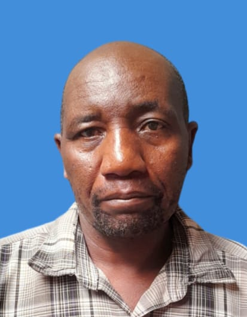
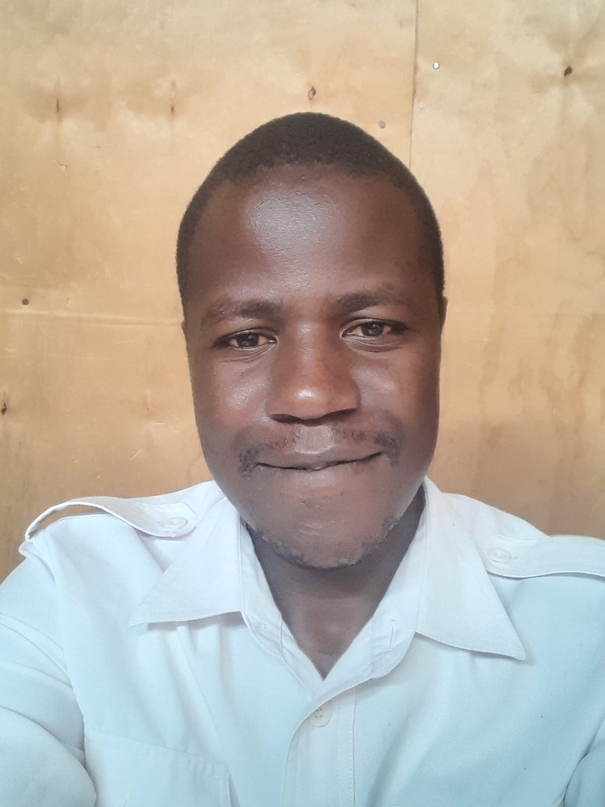

securing dreams of the most vulnerable children.
A little about us
Every child deserves a place to belong.
Community Progressive Focus Center is committed to helping children and families access care, support, and opportunities to build a hopeful future together.How was it formed?.Born in 1966 in a small village, in muranga county, as the fourth born in a family of 5, DR. Sally Thuo, had a vision. When she was twelve,the family moved to Gikondi in nyeri county to live with their grandmother after things fell apart.Due to poverty,she had to drop out of school in class seven and experienced child labour for almost ten years to survive. During those years she voluntarily helped old women in her villsge by carrying water,collecting firewood and removing painfull jiggers from their feet without expecting anything back. she enrolled as a private candidate at st. mathews for secondary education and later pursued accounting,secretarial studies and catering at a kenyan college and Devonshine college. she worked various jobs including, house help,secretary,accounts clerk and caterer,while spending her weekends visiting childrens home and sitting with elderly women. she fully dedicated herlife to christ through salvation and baptism,adopting JAMES 1:27 as her life verse,which says "Religion that God our father accepts as pure and faultless is this: to look after orphans and widows in their distress and to keep oneself from being polluted by the world". she is a proud mother of two and a devoted wife.
Explore our programmes
Our story
Growing with our community. Dignity,Not Charity:The Story Of Community Progressive Focus Center
We are here to help children feel safe, supported, and able to take their next steps.
In 1998,while living in Njiru,Dr.sally encountered abandoned,hungry,and sick children on the streets,many infected or affected by HIV/AIDS and facing heavy social stigma. moved by compassion,she resigned from her job and started small with thirteen children who had nowhere to go,opening her home to them. Because these children were discriminated against and turned away from schools, by the help of the Almighty,she was able to build a school for them. In 2001,partnering with KENWA,she established a support group for seventy-six parents infected or affected by HIV/AIDS to help them get proper care and rebuild their families. in 2007,she officially opened a real school in Njiru named Community Progressive Focus Center,built on the belief that every child deserves food,shelter,education,healthcare and love-not charity, but dignity. Over the years,more than 3000 children have come through its doors with several advancing to colleges,universities,jobs,and families.
Registration status
Registration number, legal status, and regulator details have not yet been provided. These official particulars should be confirmed by the Center before publication.
Our guiding purpose
01
Listen with respect
02
Put safety first
03
Grow together
What guides us
Our purpose, in every step.
To provide a safe, healthy, caring and supportive environment for the holistic development of the most vulnerable children.
A world where all children are valued, protected, participating, and able to enjoy their God-given rights.
The people behind the care
Meet our team
Our work depends on people who listen, act responsibly, and treat every child with dignity.
DIRECTOR AND FOUNDER
DR.salynah Nyoki Thuo
Established the home,secures funding,oversees the staff and implements the vision

MANAGER
Mr. Antony Otachi
handles the tactical execution of daliy operations,overssees the home schedules ,provides guidance to staff and tracks the wellbeing of children

PATRON
Mr. John M. Kariuki
Ensures children's health and safety,manages and oversees daily routine and lifeskills,provides behavioural guidance,and reports daily logs of incidents to the manager and social worker .

PS
Madam Pamela Waswa
Supervises dormitory and routine,ensures meals are ready in good time, tracks childrens health and hygiene,provides emotional support and conflict resolution ,and reports daily logs to the manager and social worker.
Social Worker
Mr. Hilarry Ochieng
Case management and planning,ensures the home complies with the legal system ,coordinates counselling and therapy sessions,does family tracing and reintengration, and bridges staff to external stakeholders.
What we do
Practical care, shaped around each child.
We listen to children and families, understand what matters most, and connect them with appropriate support. Our approach brings together care, learning, wellbeing, and trusted community relationships.
Care that builds trust
We aim to make children feel welcomed, heard, respected, and protected.
Learning and opportunity
We encourage children to explore their strengths and take their next steps at their own pace.
Families and community
We work alongside families and community partners to strengthen support around each child.
Progress, shared with care
Success stories
From 13 children to over 3000 lives transformed
what started in 1998 as a small initiative with thirteen children ,abandoned,hungry and sick in njiru has tremendously grown.Over the years ,more than 3000 children have come through the doors of the center,where they sleep safely,eat,go to school,and are mentored.several of these children have successfuly gone on to colleges and universities across kenya,secured jobs, and started their own families.
Reviving Families Affected by HIV/AIDS
In 2001,partnering with KENWA, a support group of seventy six parents infected or affected by HIV/AIDS was established.Through sittting together,and receibving proper care ,families that had previusly collapsed successfully found ther footing again and came back to life.
Personal journey from Brokenness to purpose
Born into poverty in 1996,forced to drop out of school in class seven,and enduring nearly ten years of child labour,Dr.sally Thou overcame immense hardship.Through resilience ,private secondary education,secretarial and accounting studies,and a deep-rooted commitment to helping others,she rose from difficult beggings to a Doctrate in Humanitarian work in 2026 ,alongside launching the saljin foundation.
The Growth into the Saljin Foundation &The MWAMKO initiative
After nearly two decades of quietly operating the Community Progressive focus Center the vision successfully scaled into the Saljin Foundation in 2020 to become a broader voice and movement .Building on this legacy, the 2026 MWAMKO initiativewas born to walk alongside teenage girls and young mothers who are survivors of sexual and gender-based violence,eqiupping them with trauma-informed support,bussiness skils,and leadership to guide them from deep pain to ecinomic independece.
Every step ,from grace to grace.
See updates & impactJoin our community